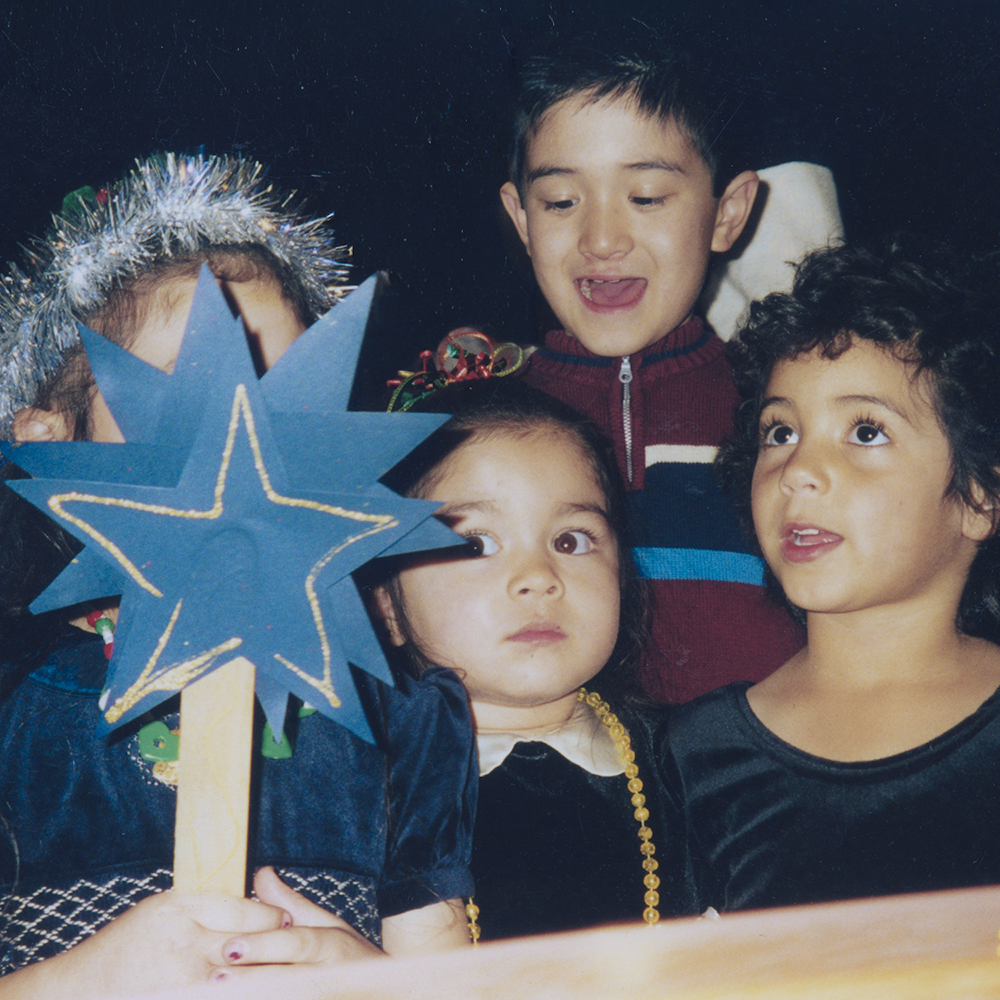
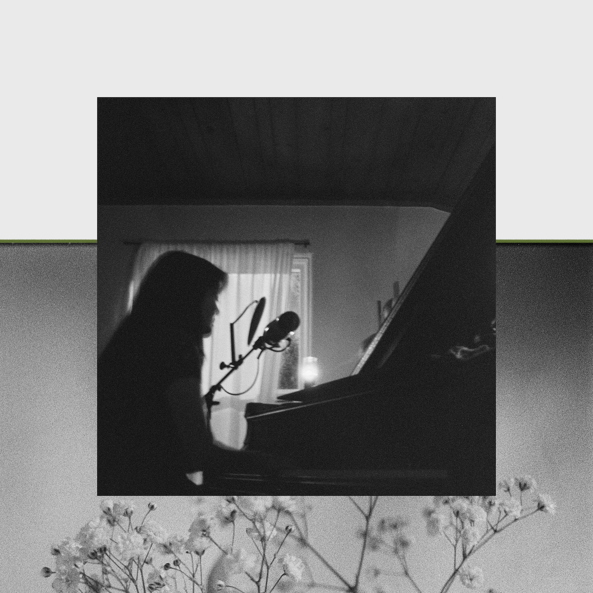
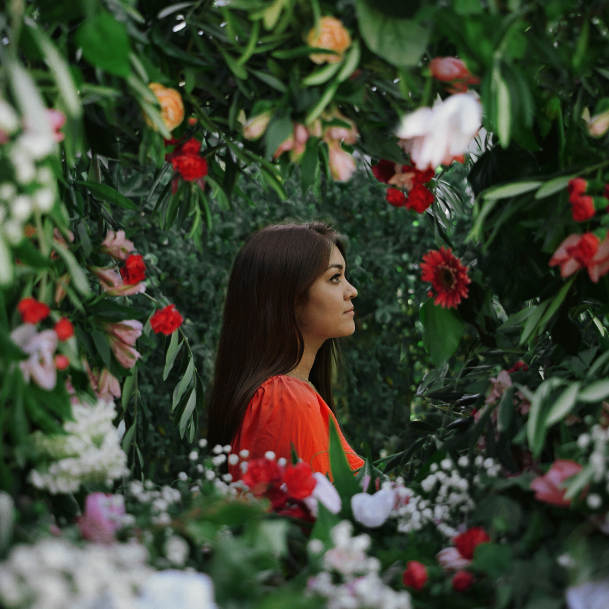
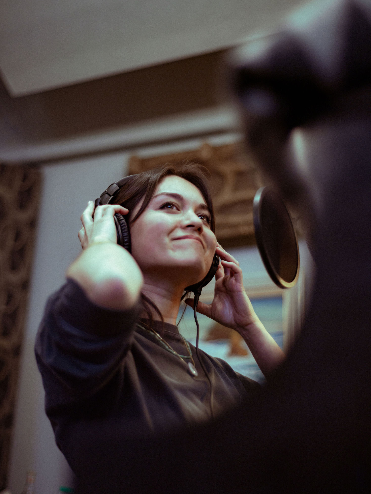

christina galisatus
maybe one day all of this will make sense to me

produced by Christina Galisatus & Michael Blasky
engineered by Tyler Chester & Luca Ruscica
mixed by Philip Weinrobe
mastered by Josh Bonati
recorded at Bell Choir Studios
all songs written & arranged by Christina Galisatus
Christina Galisatus - vocals, piano, vibraphone (8), acoustic guitar (3)
Harrison Whitford - guitar (all except 4, 11), background vocals (2)
Dario Bizio - upright bass (all except 4, 9, 11)
Remy Morritt - drums (all except 4, 9, 11)
Michael Blasky - saxophone (all except 1, 4, 9, 11)
recorded at Bell Choir Studios on April 5, 7-8, 2025
released February 13, 2026

produced by Christina Galisatus & Michael Blasky
engineered by Michael Blasky
additional bass engineering by Jess Best & Connor Schultze
additional drum engineering by Chris Sorem
mixed by Philip Weinrobe
mastered by Josh Bonati
all songs written & arranged by Christina Galisatus
Christina Galisatus - vocals, piano, Hammod organ (5, 7), pump organ (3, 10), synthesizer (10),
acoustic guitar (4, 11)
Michael Blasky - saxophones (3, 8, 10), percussion (2, 4), effects (5, 10)
Connor Schultze - upright bass (2, 3, 8, 9)
Ethan Sherman - electric guitar (3, 8)
Kyle Crane - drum set (8)
Agatha Blevin - violin (6)
Grace Rodgers - violin (6)
Paulina Flores - viola (6)
Karl McComas-Reichl - cello (6)
released March 21, 2025

produced by Christina Galisatus
engineered by Talley Sherwood
mixed by Zev Shearn-Nance
mastered by Maximilian Sink
all songs written & arranged by Christina Galisatus
Christina Galisatus - piano
Erin Bentlage - vocals
Brandon Bae - guitar
Joshua Crumbly - upright bass
Zev Shearn-Nance - drums
Michael Blasky - tenor saxophone
Steven Lugerner - bass clarinet
recorded January 12-13, 2022 at Tritone Recording Studio
released January 27, 2023

photo: Alex Farias